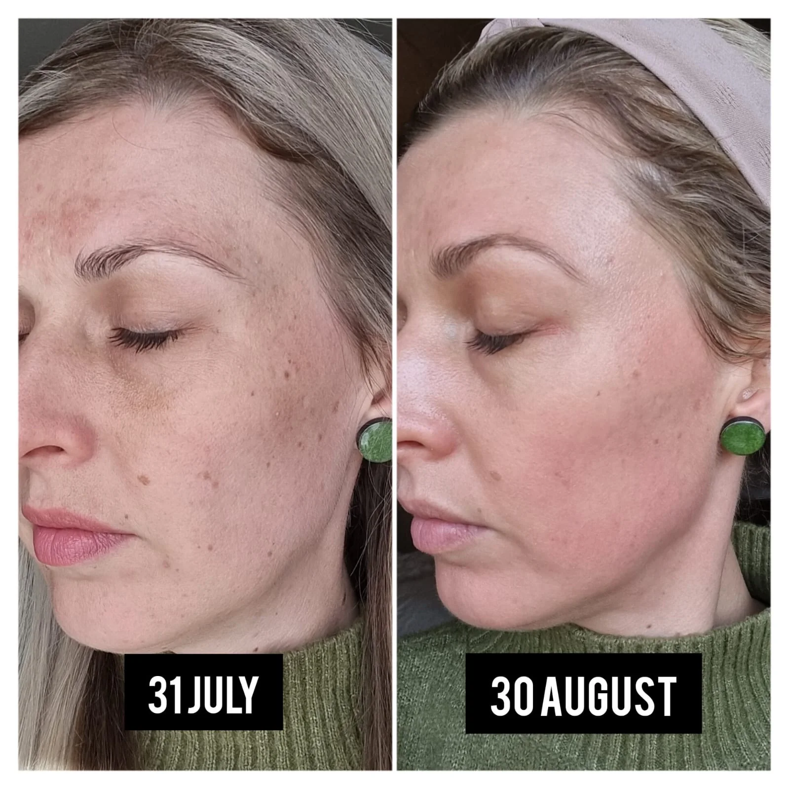

Cosmelan Centurion
Cosmelan Depigmentation Treatment
A professional programme for clients seeking support with the appearance of uneven pigmentation and overall skin tone.
Professional programme
Consultation-led care
Cosmelan requires careful assessment, professional guidance and commitment to the recommended home-care routine.
Benefits
Professional pigmentation support
- Supports a more even-looking skin tone
- Targets the appearance of uneven pigmentation
- Includes professional and home-care phases
- Personalised guidance and follow-up
Suitable concerns
When Cosmelan may be considered
Cosmelan may be suitable for melasma, sun-related pigmentation, uneven-looking tone and persistent discolouration. A consultation is required to assess suitability and expectations.
One-month progress
Cosmelan Before & After
View an authentic client example. Individual results vary according to skin, pigmentation severity and adherence to home care.
View Cosmelan result
Cosmelan FAQ
Before starting the programme
What is Cosmelan?
Cosmelan is a professional depigmentation programme combining an in-clinic protocol with prescribed home care.
What concerns can it support?
It may be considered for uneven pigmentation, melasma and uneven-looking skin tone after professional assessment.
Is home care important?
Yes. Following the prescribed routine and sun-protection guidance is essential to the treatment plan.
Private consultation
Ready to discuss Cosmelan?
Book a consultation to assess your skin, pigmentation concerns and suitability for the programme.
Book Appointment